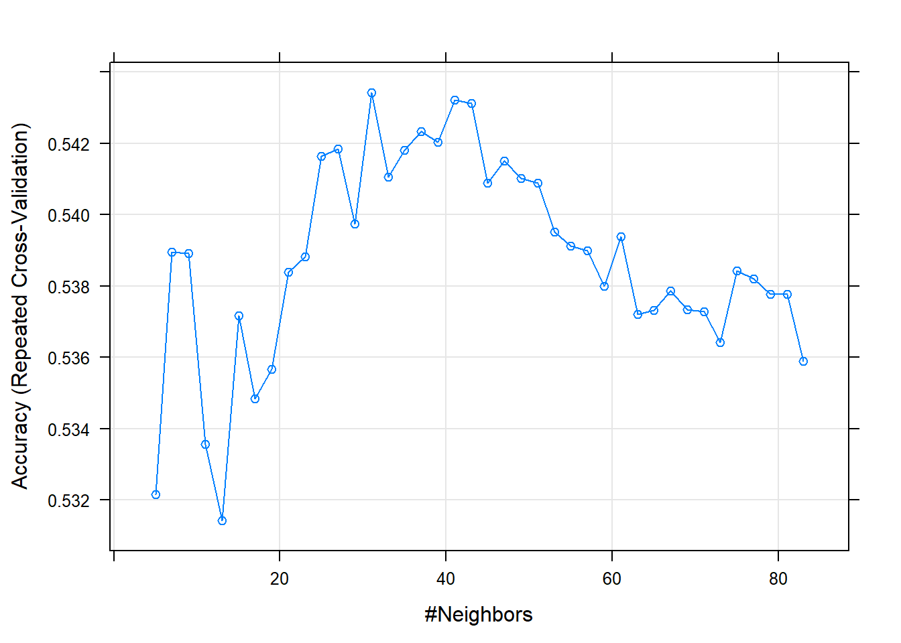

Chapter 5 K-Nearest Neighbor
K-Nearest Neighbor is a supervised machine learning algorithm that can be used for both classification and regression problems. It is able to classify a new data point by comparing its variables to those variables of its “nearest neighbors.” The Euclidean distance formula is used to determine which of the data points are closest to the new point. Similarly to Random Forest, KNN uses the consensus of those neighbors to predict the outcome variable for the new data point.
5.1 Data Partitioning
Our data has already been randomly partitioned into training and test data sets, however, the KNN algorithm we are utilizing within the caret library requires that we make our quality variables a “factor” data type.
set.seed(444)
knn.train <- train
knn.train$quality <-as.factor(knn.train$quality)
knn.test <- test
knn.test$quality <-as.factor(knn.test$quality)
str(knn.test)## 'data.frame': 1933 obs. of 12 variables:
## $ fixed.acidity : num 0.331 0.612 0.298 0.289 0.24 ...
## $ volatile.acidity : num 0.533 0.133 0.413 0.38 0.333 ...
## $ citric.acid : num 0 0.3373 0 0 0.0482 ...
## $ residual.sugar : num 0.0307 0.0199 0.0199 0.0092 0.0184 ...
## $ chlorides : num 0.148 0.11 0.111 0.093 0.146 ...
## $ free.sulfur.dioxide : num 0.0833 0.0556 0.0347 0.0486 0.0486 ...
## $ total.sulfur.dioxide: num 0.1406 0.1244 0.0645 0.0346 0.1359 ...
## $ density : num 0.187 0.21 0.206 0.144 0.169 ...
## $ pH : num 0.372 0.341 0.612 0.519 0.434 ...
## $ sulphates : num 0.258 0.202 0.191 0.14 0.18 ...
## $ alcohol : num 0.261 0.261 0.203 0.29 0.174 ...
## $ quality : Factor w/ 6 levels "3","4","5","6",..: 3 4 3 5 3 3 4 4 3 3 ...str(knn.train)## 'data.frame': 4564 obs. of 12 variables:
## $ fixed.acidity : num 0.298 0.331 0.298 0.339 0.331 ...
## $ volatile.acidity : num 0.413 0.453 0.387 0.347 0.333 ...
## $ citric.acid : num 0 0.0241 0 0.0361 0.012 ...
## $ residual.sugar : num 0.0199 0.0261 0.0184 0.0153 0.0215 ...
## $ chlorides : num 0.1113 0.1379 0.1096 0.0997 0.1063 ...
## $ free.sulfur.dioxide : num 0.0347 0.0486 0.0417 0.0486 0.0278 ...
## $ total.sulfur.dioxide: num 0.0645 0.1106 0.0783 0.1221 0.0276 ...
## $ density : num 0.206 0.191 0.206 0.179 0.187 ...
## $ pH : num 0.612 0.419 0.612 0.45 0.496 ...
## $ sulphates : num 0.191 0.242 0.191 0.135 0.197 ...
## $ alcohol : num 0.203 0.261 0.203 0.203 0.217 ...
## $ quality : Factor w/ 7 levels "3","4","5","6",..: 3 3 3 3 5 3 3 3 3 3 ...Because our data was randomly partitioned you can see there are 7 levels within quality factor in the train data, while there are only 6 levels within the quality factor in the test data. This will have to be managed later using the “droplevels” function, to find the accuracy using the confusionmatrix.
5.2 Determine the k-value
The k-value in the KNN algorithm determines how many of the nearest neighbors we will use to calculate our predicted quality. There are many different methods for computing the value of K, however, caret provides a built in library function “train” to help determine what the k-value we should utilize is.
“train” utilizes k-fold cross validation to determine the accuracy of each k-value value. For our model, we used the repeated cross-validation method which indicates using cross-validation and repeating it a number of times to ensure accuracy. For our parameters, we chose to repeat 5 times and left the default number of folds to 10, as that has been previously found to result in a low-bias model.
Within the train function, we define the method for training our model to be “knn” for k-nearest neighbor and our tune length to be 40. The tuneLength parameter tells the algorithm to try 40 different values of k.
set.seed(400)
tc <- trainControl(method="repeatedcv",repeats = 5) #,classProbs=TRUE,summaryFunction = twoClassSummary)
k.value <- train(quality ~ ., data = knn.train, method = "knn", trControl = tc, tuneLength=40)
k.value## k-Nearest Neighbors
##
## 4564 samples
## 11 predictor
## 7 classes: '3', '4', '5', '6', '7', '8', '9'
##
## No pre-processing
## Resampling: Cross-Validated (10 fold, repeated 5 times)
## Summary of sample sizes: 4108, 4108, 4106, 4108, 4108, 4109, ...
## Resampling results across tuning parameters:
##
## k Accuracy Kappa
## 5 0.5321658 0.2858505
## 7 0.5389564 0.2902098
## 9 0.5389154 0.2868803
## 11 0.5335706 0.2749516
## 13 0.5314191 0.2693456
## 15 0.5371607 0.2765031
## 17 0.5348392 0.2710070
## 19 0.5356741 0.2702315
## 21 0.5383901 0.2736512
## 23 0.5388281 0.2735700
## 25 0.5416298 0.2764623
## 27 0.5418483 0.2759878
## 29 0.5397452 0.2716491
## 31 0.5434266 0.2766398
## 33 0.5410587 0.2723851
## 35 0.5418060 0.2724562
## 37 0.5423318 0.2729050
## 39 0.5420259 0.2713667
## 41 0.5432096 0.2732347
## 43 0.5431208 0.2726629
## 45 0.5408835 0.2686819
## 47 0.5414967 0.2691622
## 49 0.5410156 0.2676621
## 51 0.5408815 0.2668637
## 53 0.5395240 0.2638237
## 55 0.5391279 0.2630925
## 57 0.5389955 0.2621340
## 59 0.5379898 0.2603583
## 61 0.5393910 0.2621689
## 63 0.5371996 0.2589008
## 65 0.5373285 0.2588102
## 67 0.5378552 0.2590151
## 69 0.5373315 0.2577817
## 71 0.5372894 0.2572961
## 73 0.5364118 0.2556921
## 75 0.5384289 0.2584713
## 77 0.5382081 0.2577366
## 79 0.5377703 0.2569147
## 81 0.5377717 0.2563957
## 83 0.5358855 0.2530376
##
## Accuracy was used to select the optimal model using the largest value.
## The final value used for the model was k = 31.The plot below shows the accuracy of the repeated cross-validation models to the k-values from train. We can see that the highest level of accuracy was hit at k=37 and then appears to decrease in accuracy as k increases.
plot(k.value)
5.3 KNN Prediction
Now that we have our k-value and knn model trained, we can use it to predict our test values. In this portion of code, we will also account for the missing level from the quality factor that we found earlier, so that we can compute our confusion matrix.
knnPredict <- predict(k.value,newdata = knn.test )
knnPredict.2<-droplevels(knnPredict)
#Get the confusion matrix to see accuracy value and other parameter values
confusionMatrix(knnPredict.2, knn.test$quality )## Warning in levels(reference) != levels(data): longer object length is not a multiple of shorter object length## Warning in confusionMatrix.default(knnPredict.2, knn.test$quality): Levels are not in the same order for reference and data. Refactoring data to match.## Confusion Matrix and Statistics
##
## Reference
## Prediction 3 4 5 6 7 8
## 3 0 0 0 0 0 0
## 4 0 0 0 0 0 0
## 5 5 40 380 197 10 0
## 6 5 23 226 587 188 27
## 7 1 2 14 76 121 30
## 8 0 0 0 1 0 0
##
## Overall Statistics
##
## Accuracy : 0.5629
## 95% CI : (0.5404, 0.5851)
## No Information Rate : 0.4454
## P-Value [Acc > NIR] : < 2.2e-16
##
## Kappa : 0.3072
##
## Mcnemar's Test P-Value : NA
##
## Statistics by Class:
##
## Class: 3 Class: 4 Class: 5 Class: 6 Class: 7 Class: 8
## Sensitivity 0.000000 0.00000 0.6129 0.6818 0.3793 0.0000000
## Specificity 1.000000 1.00000 0.8081 0.5625 0.9238 0.9994670
## Pos Pred Value NaN NaN 0.6013 0.5559 0.4959 0.0000000
## Neg Pred Value 0.994309 0.96637 0.8155 0.6876 0.8828 0.9704969
## Prevalence 0.005691 0.03363 0.3207 0.4454 0.1650 0.0294878
## Detection Rate 0.000000 0.00000 0.1966 0.3037 0.0626 0.0000000
## Detection Prevalence 0.000000 0.00000 0.3270 0.5463 0.1262 0.0005173
## Balanced Accuracy 0.500000 0.50000 0.7105 0.6221 0.6516 0.4997335Our model was found to be about 56.75% accurate in predicting quality measures for our wine samples.
5.4 Accuracy
In the code below we are adding the percentage accuracy to the accuracy dataframe for later model comparison.
accuracy[1,1] <- confusionMatrix(knnPredict.2, knn.test$quality )[["overall"]][["Accuracy"]]## Warning in levels(reference) != levels(data): longer object length is not a multiple of shorter object length## Warning in confusionMatrix.default(knnPredict.2, knn.test$quality): Levels are not in the same order for reference and data. Refactoring data to match.